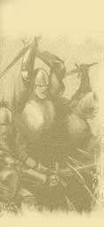

|

|
>> Содержание / Список кланов /
 DarkOrchestra DarkOrchestra
В стародавние времена, о которых помнят немногие из Правдивых сказителей (а кто же поверит лгунам?), на дорогах встречалось множество бродячих Менестрелей. Это сейчас служители искусства растолстели от сытой жизни и утратили свою музу, а тогда же все было не так. Они шли из города в город, из деревни в столицу, а из столицы обратно в провинцию, останавливаясь на ночлег то во дворце, то в замках вельмож, иногда в домах простых горожан, а зачастую в жалких лачугах бедняков или запросто спали, завернувшись в потертые плащи прямо на земле возле дороги. Ибо не прельщало бардов счастье спокойной и сытой жизни, а двигало неутолимое желание петь оседлым, вросшим по самое сердце в свою родную землю людям о том, чего они никогда уже не смогут увидеть. И они шли в дождь, грозу и слякоть, в зимнюю метель и стужу, под палящим солнцем и нежным майским днем, и Ветер был им попутчиком. И останавливаясь ненадолго, они давали великолепнейшие представления, читали красивейшие и глубочайшие стихи, играли тонкую и чувственную, невероятно сильную, но при этом настолько нежную музыку, что у слушавшего сердце сжималось, и готово было разорваться… И конечно же они пели песни. Их голоса… О, их голоса! Они были глубоки и звучны, способны легко подавить, и заставить слушать себя всю торговую площадь какого-нибудь большого города. И при этом они не были резки и неприятны, как голоса каких-то герольдов и глашатаев, вещающих об очередном указе короля, о нет, напротив, они были чертовски хороши! В своих песнях эти завораживающие голоса ведали о просторах и далях, о том, что мир бесконечно велик, что чудес в нем великое множество, о страстной любви, счастливой и несчастной, о ненависти и страданиях, о горе и радости, о великих сражениях, о славных победах и горьких поражениях, о странствиях, о небе… Это было прекрасно!
Но люди тогда, как и теперь, были глухи. Слушали, восхищались, и на минуту в душе их возгорался огонь, и находили отклик песни менестрелей в их сердцах… Но только на минуту. Как только песня кончалась, люди вновь попадали в оковы своих мирских забот. И хотя в благодарность люди давали бездомным бардам ночлег на сеновале, плошку похлебки, или несколько монет и на мгновение открываюли им свои сердца, но многих из бардов ужасно тяготила эта стена непонимания. И помимо воли ожесточались их сердца...
И вот однажды, после своего выступления на Торговой площади Столицы Великий Маг и Певец (а с чего вы взяли, что барды не были волшебниками? Вспомните хотя бы факиров и фокусников, которые путешествовали вместе с менестрелями. Уж они-то были самыми настоящими колдунами, можете мне поверить. А в столь близком соседстве многому можно научиться. Да и певцы сами по себе обладали Даром, ибо тот кто может тронуть души многих людей одновременно, в любом случае обладает великой силой), так вот, после своего выступления Великий Маг и Певец, в очередной раз увидел, как люди, дослушав его, вернулись с прежней упорностью к самому мирскому занятию на свете – торговле. И не вынесла душа его, и встал он на помосте во весь рост, и запел последнюю свою песню, которую когда-либо слышали люди. Ибо непростая это была песня. Это был клич ко всем менестрелям с такой же болью в душе, как у него, клич, слышный во всех концах света, это был сигнал сбора в особом темном месте, ибо силы тьмы овладели в этот момент поэтом, и те, кому предназначался зов, поняли его. Поняли и подхватили эту мелодию - гимн Темного Оркестра, который образовался в тот вечер. Никто не знает, сколько длилась песня, ибо время тогда остановилось, но допев, Темные барды двинулись к месту сбора. А народ на площади так и остался стоять не в силах пошевелиться, и еще долго так стоял, ошеломленный. Но Певец этого уже не видел. Он исчез со сцены вместе с последним аккордом своей Песни.
Официальный сайт клана: http://darkorchestra.clan.su
|
|
|